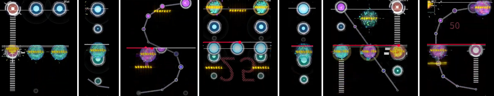
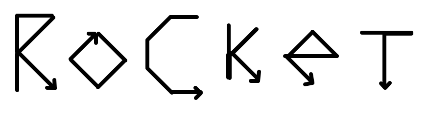
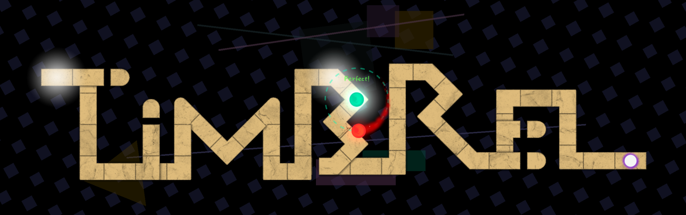

Solution: The Final Remix
Answer: WASHTUB
Written by lightbulbMEOW, kt3
We are presented with a series of minipuzzles. The first step is to identify which rhythm games they come from.
- Bang Dream!
The flavortext mentions that we should look at the Onstage versions of these characters. The characters’ silhouettes are:
| Character | Extracted letter |
|---|---|
| Toyama Kasumi | A |
| Maruyama Aya | R |
| Okusawa Misaki | A |
| Ichigaya Arisa | C |
| Uehara Himari | H |
| Mitake Ran | N |
| Imai Lisa | I |
| Udagawa Ako | D |
The answer is ARACHNID.
- Elite Beat Agents
Each screenshot is from a minigame. These minigames are:
| Minigame | Extracted letter |
|---|---|
| Trio of Mayhem! Love and Boyfriends!! | B |
| Art and Beauty! Love and Happiness!? | A |
| Ahoy, Mates! Sunken Delights and Adventure!! | S |
| Cry Wolf! Meteorology and Parenting!! | E |
| Survive! Celebrity Lives and Desert Isles!! | B |
| A Christmas Gift | A |
| Rags to Riches! Go East, Wildcatter! | L |
| No More Music?? The Last Hope!! | L |
The answer is BASEBALL.
- Cytus
The flavortext means the song’s BPM is twice as fast than it usually is. If we halve the BPM of the song, which changes what the map looks like, we can see letters being spelled out. The answer is FISHING.

- Deemo
There is no sound, but we can imagine that these are songs being played on a piano. We can identify these songs:
| Song | Extracted letter |
|---|---|
| London Bridge is Falling Down | R |
| Happy Birthday | A |
| Baa Baa Black Sheep | C |
| Twinkle Twinkle Little Star | K |
| Jingle Bells | E |
| Ode to Joy | T |
The answer is RACKET.
- Friday Night Funkin’
Use the arrows as instructions to move on a grid. Each set traces out a different letter. The answer is ROCKET.

- Geometry Dash
Play the level normally, then decode the taps and holds using morse code. The answer is SHRIMP.

- ADOFAI
If we imagine the level without any speed-ups or speed-downs, the level will resemble the word TIMBREL.

- Meta
Notice that the answers are sorted in alphabetical order, suggesting that we must rearrange the feeders. Notice that the names of the games start with the letters A-G.
The flavortext clues Rhythm Heaven Fever, specifically Remix 10. It turns out, each feeder is cluing a minigame from Remix 10. They are:
| Subpuzzle | Feeder | Minigame | Order in Remix 10 |
|---|---|---|---|
| ADOFAI | TIMBREL | Tambourine | 23 |
| Bang Dream | ARACHNID | Packing Pests | 1 |
| Cytus | FISHING | Catch of the Day | 19 |
| Deemo | RACKET | Air Rally | 8 |
| Elite Beat Agents | BASEBALL | Exhibition Match | 20 |
| Friday Night Funkin’ | ROCKET | Launch Party | 21 |
| Geometry Dash | SHRIMP | Shrimp Shuffle | 2 |
Taking the order of the minigame in Remix 10 and converting with A1Z26, we get the final answer WASHTUB.